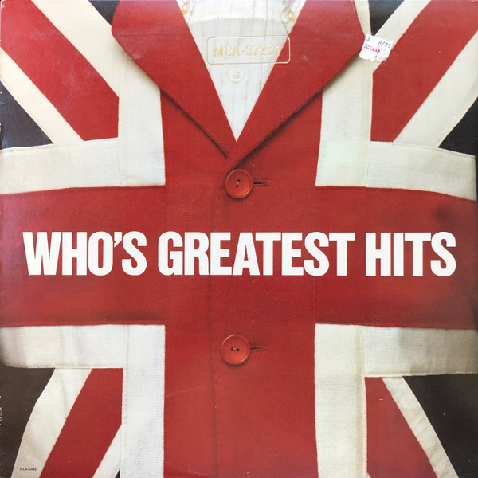

Greatest Hits
The Who
Upgrade idea: No dedicated audiophile reissue exists for this specific compilation. For the best-sounding Who material on vinyl, the original UK Track and Polydor pressings of individual albums (My Generation, Tommy, Who's Next, Quadrophenia) are the collector benchmarks. This MCA compilation is a practical single-disc overview but not the reference for any individual album.
- Original release
- 1983
- Pressing year
- 1983
- Country
- US
- Format
- Vinyl LP, Compilation
- Label / Cat#
- MCA Records – MCA-37261 / MCA Records – MCA-5408
- Genres
- Rock
- Discogs release
- 1770831
- Discogs master
- 114702
- Wikipedia
- Greatest Hits
Production notes
Tracklist (Discogs)
| A1 | Substitute | 3:45 |
| A2 | The Seeker | 3:09 |
| A3 | Magic Bus | 3:20 |
| A4 | My Generation | 3:15 |
| A5 | Pinball Wizard | 3:00 |
| A6 | Happy Jack | 2:08 |
| A7 | Won't Get Fooled Again | 3:38 |
| B1 | My Wife | 3:32 |
| B2 | Squeeze Box | 2:40 |
| B3 | The Relay | 3:40 |
| B4 | 5:15 | 4:48 |
| B5 | Love Reign O'er Me | 3:04 |
| B6 | Who Are You | 5:00 |
Identifiers
- Matrix / Runout: MCA 3337-W4 KPG/MCA (Run-out Side A)
- Matrix / Runout: MCA 3338-W3 KPG/MCA (Run-out Side B)
- Matrix / Runout: MCA-3337-W2 KPG/MCA 2 (Variant Run-out Side A)
- Matrix / Runout: MCA-3338-W2 KPG/MCA 2 (Variant Run-out Side B)
- Matrix / Runout: MCA-3337-W2 KPG/MCA ⧈-G-⧈ (Side A Variant 2 etched except for ⧈-G-⧈ which is stamped)
- Matrix / Runout: MCA-3338-W1 KPG/MCA ⧈-G-⧈ (Side B Variant 2 etched except for ⧈-G-⧈ stamped)
- Barcode: 076732540817 (Scanned)
- Barcode: 0 76732-5408-1 (Text)
Notes
Front cover has catalog # MCA-37261, back cover and vinyl has catalog # MCA-5408. Gloversville NY variant with same catalog numbers.
Another similar variant also has ()'s around MCA3338 under MCA-1496
Notes & discrepancies
- No Apple Music match found.
Greatest Hits is a 1983 MCA Records compilation collecting key tracks from The Who’s career across two distinct catalog configurations — front cover lists
MCA-37261while the vinyl and back cover carryMCA-5408, a known variant of this pressing. The Who’s catalog had migrated to MCA in the US by this point, and this compilation served as the primary entry-point overview of the band’s work through the early 1980s, spanning their mid-60s mod roots through to It’s Hard (1982).The Who — Roger Daltrey (vocals), Pete Townshend (guitar, songwriting), John Entwistle (bass), and Keith Moon (drums, died 1978) — are one of rock’s foundational acts, responsible for defining the sonic vocabulary of British rock from “My Generation” (1965) through the concept-album ambition of Tommy (1969) and Quadrophenia (1973), to the stripped-back power of Who’s Next (1971). This compilation captures that arc in distilled form.
This 1983 US pressing was pressed at the MCA pressing plant in Gloversville, New York — identified by the
KPG/MCAcode in the runout (KPG= Keystone Pressing, Gloversville). The matrixMCA 3337-W4 KPG/MCAidentifies Side A as the fourth lacquer generation (W4) from the Gloversville plant. No Apple Music equivalent for this specific compilation.About this 1983 US pressing (Vinyl, LP, Compilation): MCA catalog MCA-37261 (front cover) / MCA-5408 (back cover and vinyl), 1983 pressing. Gloversville, NY pressing plant (KPG/MCA). Matrix MCA 3337-W4 KPG/MCA (Side A) / MCA 3338-W3 KPG/MCA (Side B). Barcode 7673254081.